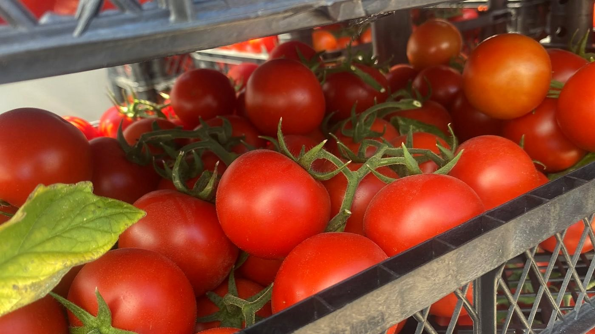
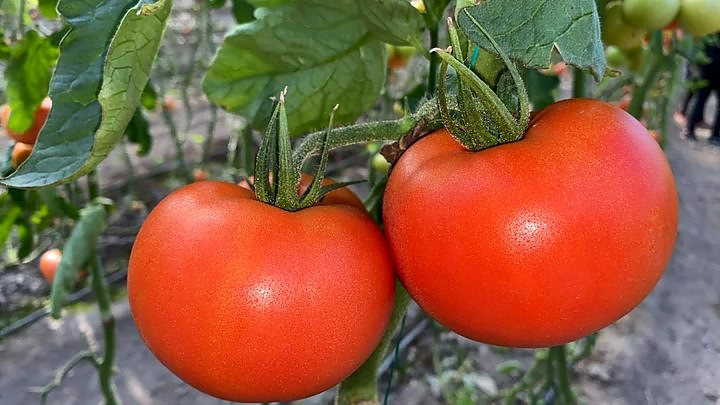
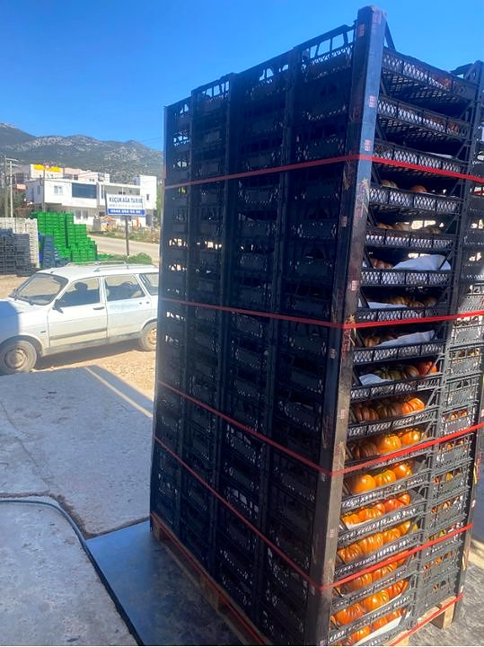

Tecrübeyle yetişen, tazelikle ulaşan güven
Küçükağa Tarım; sera üretimi, toptan domates ve sebze tedariki ve kendi araç filosuyla lojistiği tek çatı altında yürüten köklü bir tarım işletmesidir.
Üretimden sofraya tek çatı altında
Tarladan depoya, depodan teslimata kadar zincirin her halkasını kendimiz yönetiyoruz.
Üretim
Aydın'daki seralarımızda ve sözleşmeli üreticilerimizle domates başta olmak üzere sera ürünleri yetiştiriyoruz.
Toptan Tedarik
Doğrudan üreticiden alım, kalite kontrol ve kasalama ile hal, market ve kurumsal müşterilere toptan tedarik.
Lojistik
Kendi araç filomuz ve soğuk hava depolarımızla ürünleri tazeliğini koruyarak Türkiye'nin her yerine ulaştırıyoruz.
Seradan ve tarladan seçkin ürünler
Sezona göre değişen ürünlerimizi kasalı ve paletli olarak toptan tedarik ediyoruz.


Aile işletmesinden güçlü bir tedarik organizasyonuna
Yaş sebze ve meyve üretiminde 30 yılı aşan tecrübemizle başlayan yolculuğumuz, 2001'de kurumsal kimlik kazandı. Bugün Aydın, Kaş, Burdur Çavdır ve Elmalı'daki şubelerimizle üretimden lojistiğe uzanan bir organizasyon olarak hizmet veriyoruz.
Planlı, sürdürülebilir ve güvenilir çalışma anlayışımızla yerel ve ulusal ölçekte çözüm ortağı olmayı hedefliyoruz.
HikâyemizKendi araç filomuzla zamanında teslimat
Hasat edilen ürünler, aynı gün içinde depolarımızda kasalanıp paletlenir ve kendi araç filomuzla yola çıkar. Kamyon ve kamyonetlerden oluşan filomuz; hal, market zincirleri, restoranlar ve toptancılara düzenli sevkiyat yapar.
- Kendi araç filosu
- Paletli ve kasalı yükleme
- Soğuk hava depolama
- Türkiye geneli dağıtım



Çavdır Fresh
Çavdır Fresh, Burdur Çavdır ve Antalya Elmalı bölgesindeki şubelerimizden sevk edilen ürünleri taşıyan tescilli markamızdır. Seçilen ürünler Çavdır Fresh kasalarında, aynı kalite anlayışıyla yola çıkar.
- Türk Patent tescilli marka
- Çavdır ve Elmalı şubeleri
- Seçilmiş ürünler
- Markalı kasa ile sevkiyat
Dört bölgede, üretimin kalbinde
Aydın
Acarlar Adnan Menderes Toptancı Hali No: 41-46
İncirliova, Aydın
Kaş
Çavdır Mahallesi Merkez Sokak No: 58/2
Kaş, Antalya
Burdur
Çavdır Toptancı Sebze Meyve Hali B Blok No: 6
Çavdır, Burdur
Elmalı
Elmalı Yuva Mahallesi, Hoppa Oğlu Kantarı
Elmalı, Antalya
Tescilli markalarla güvenilir tedarik
Ürünlerimizi Türk Patent ve Marka Kurumu tescilli Küçükağa Tarım ve Çavdır Fresh markalarıyla sunuyoruz.
Küçükağa Tarım
Aydın merkezli üretim, toptan tedarik ve sevkiyat.
Çavdır Fresh
Çavdır ve Elmalı şubelerimizin taze ürün markası.

Marka Tescil Belgesi
Türk Patent ve Marka Kurumu, tescil no: 2022 189003.


Toptan sipariş ve fiyat bilgisi için bize ulaşın
Ürün, miktar ve teslimat yerini yazın; size en kısa sürede dönüş yapalım.